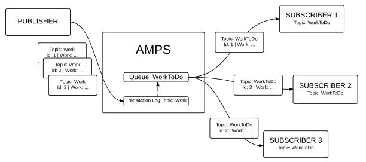
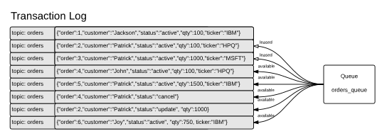

15. Message Queues¶
AMPS includes high performance queuing built on the AMPS messaging engine and transaction log. AMPS message queues combine elements of classic message queuing with the advanced messaging features of AMPS, including content filtering, aggregation and projection, historical replay, and so on. This chapter presents an overview of queues.
AMPS message queues help you easily solve some common messaging problems:
- Ensuring that a message is only processed once.
- Distributing tasks across workers in a fair manner.
- Ensuring that a message is delivered to and processed by a worker.
- Ensuring that when a worker fails to process a message, that message is redelivered.
- Setting limits for retries in processing a message, and taking an action when those limits are exceeded (such as moving the message to a dead-letter queue).
While it’s possible to create applications with these properties by using the other features of AMPS, message queues provide these functions built into the AMPS server. In addition, message queues allow you to:
- Replicate messages between AMPS instances while preserving delivery guarantees.
- Create views and aggregates based on the current contents of a queue.
- Filter messages into and out of a queue.
- Provide a single published message to multiple queues.
- Aggregate multiple topics into a single queue.
Tip
Use message queues when it is important to ensure that a message is processed once, by a single consumer. When it is important to distribute messages to a number of consumers, use the AMPS publish/subscribe delivery model rather than a message queue.
The following diagram illustrates a simple usage of a queue to distribute work across three consumers:
{kind=link}
This diagram shows a simple use of AMPS queues to distribute work. In
the diagram, the transaction log is configured to record a topic named
Work. AMPS is also configured with a queue named WorkToDo,
which is based on the underlying topic Work. The publisher publishes
three messages to the topic Work, and AMPS includes those messages
in the WorkToDo queue. Each message is delivered to one of the three
subscribers to the WorkToDo queue. Unlike pub/sub messaging, each
subscriber only receives one message, and each message is delivered to
only one subscriber.
Notice that, even though AMPS provides queue semantics over the
WorkToDo topic, the messages are recorded in the transaction log
once, in the Work topic. Other subscribers could subscribe to the
Work topic to receive the full stream of messages, or do a bookmark
replay over the Work topic to recreate the message flow or audit the
messages published to that topic.
Also notice that, while the Work topic (the underlying topic) must be
recorded in the transaction log, there is no need to define the Work topic
in the SOW section of the configuration file. Queues use the transaction log to
determine which messages to enqueue, and when a message is acknowledged, the
acknowledgment is also recorded in the transaction log.
Getting Started with AMPS Queues¶
To add a simple queue to AMPS, add the following options to your configuration file.
First, create a transaction log that will record the messages for the
queue and the state of the queue, as described in
Transactional Messaging and Bookmark Subscriptions.
You add the transaction log
entry if your AMPS configuration does not already have one. Otherwise,
you can simply add a Topic statement or modify an existing Topic
statement to record the messages. The sample below captures any JSON
messages published to the Work topic, and also tracks the state of the queue itself:
<AMPSConfig>
...
<TransactionLog>
<JournalDirectory>./journals</JournalDirectory>
<Topic>
<Name>Work</Name>
<MessageType>json</MessageType>
</Topic>
<Topic>
<Name>WorkToDo</Name>
<MessageType>json</MessageType>
</Topic>
</TransactionLog>
...
</AMPSConfig>
Next, declare the queue topic itself. Queues are defined in the SOW
element of the AMPSConfig file, as shown below:
<AMPSConfig>
...
<SOW>
<Queue>
<Name>WorkToDo</Name>
<MessageType>json</MessageType>
<Semantics>at-most-once</Semantics>
<UnderlyingTopic>Work</UnderlyingTopic>
</Queue>
</SOW>
...
</AMPSConfig>
These simple configuration changes create an AMPS message queue. Notice
that the Topic for the queue in this case is WorkToDo, which
includes every message published to the underlying topic Work. You
could also use a regular expression to include messages to more than one
topic, or leave out the UnderlyingTopic to include only messages
published to the topic with the same name as the queue.
This simple queue provides each message that arrives for the queue to at most one subscriber. After AMPS delivers the message to one subscriber, AMPS removes the message from the queue without waiting for the subscriber to acknowledge the message.
While it’s easy to create a simple queue, AMPS offers a rich queuing model that is designed to meet a wide variety of queuing needs. The options are described in the following sections and the AMPS Configuration Reference.
Queue Replication Types¶
AMPS supports three different replication types for a queue. The configuration tag used to define a queue specifies the replication type for the queue.
| Configuration Tag | Replication Type | Description |
|---|---|---|
Queue |
Distributed queue | Fully distributed queue. |
LocalQueue |
Local queue | Queue exists on a single instance, delivery guarantees only apply to that instance. Cannot be replicated. |
GroupLocalQueue |
Queue replicated
to specific instances,
most often in the
same replication
Group |
Distributed queue on a specific set of instances. In version 5.3.4 and
higher, the instances that
contain the queue must all
be in the same In earlier versions of
AMPS, every queue with
the same name in the
replication fabric is
treated as an instance of
the same queue and must
have the same definition
and the same
|
By default, AMPS queues are distributed queues. That is, if the queue
topic or the underlying topics are replicated, AMPS provides the queue
delivery guarantees (that is, at-most-once or at-least-once delivery)
as though all of the instances were delivering
messages from a single queue.
AMPS provides local queues (where each instance has a separate,
independent queue) when a queue is defined with the LocalQueue tag. In
this case, AMPS does not allow replication of the queue topic, and all
management of the queue is local to the individual instance.
AMPS also supports distributed queues that are restricted to a set of
instances within a mesh of replicated instances. These queues are defined
with the GroupLocalQueue tag, to indicate that the queue is
restricted to a subset of the servers involved in replication. In this
case, only the servers that define the GroupLocalQueue participate in
message delivery for the queue. In addition, the group must choose the
instance that will initially own messages for the queue, as described in
the section on distributed queues and queue message ownership.
In version 5.3.4 and later, the identity of a GroupLocalQueue is defined
by the Name of the queue combined with the GroupLocalQueueDomain,
if one is set, or the Group of the AMPS instance if the definition
does not include a GroupLocalQueueDomain tag.
In previous versions of AMPS, the identity of the queue is determined only
by the Name of the group local queue, regardless of the instance that
defines the queue.
Tip
When defining a GroupLocalQueue, the instances that participate
in the queue do not need to be in the same replication group:
any instance in a replicated mesh that defines the queue can
host an instance of the queue, regardless of whether the instance
is in the same replication group or not. However, if the instances
that host the queue are in different groups, the queue definitions
should set the same GroupLocalQueueDomain to be considered
to be the same queue.
Each instance of AMPS manages its own subscriptions and backlog,
regardless of the replication model. Delivery guarantees are
provided by managing the ownership of each message in the queue,
as described in the Replicated Queues section. Only messages
owned by the current instance will be delivered to subscribers,
and only the subscriptions on the current instance are considered
for delivery fairness and limits such as MaxBacklog (the overall
limit for leases from the queue).
Understanding AMPS Queuing¶
AMPS message queues take advantage of the full historical and transactional power of the AMPS engine. Each queue is implemented as a view over an underlying topic or set of topics. Each of the underlying topics must be recorded in a transaction log. Publishers publish to the underlying topic, and the messages are recorded in the transaction log. Consumers simply subscribe to the queue. AMPS tracks which messages have been delivered to subscribers and which messages have been processed by subscribers. AMPS delivers the next available message to the next subscriber.
Unlike traditional queues, which require consumers to poll for messages, AMPS queues use a subscription model. In this model, each queue consumer requests that AMPS provide messages from the queue. The consumer can also request a maximum number of messages to have outstanding from the queue at any given time, referred to as the backlog for that consumer. When a message is available, and the consumer has fewer messages outstanding than the backlog for that consumer, AMPS delivers the message to the consumer. This improves latency and conserves bandwidth, since there is no need for consumers to repeatedly poll the queue to see if work is available. In addition, the server maintains an overall view of the consumers, which allows the server to control message distribution strategies to optimize for latency, optimize to deliver to clients with the most unused capacity, or optimize for general fairness.
The following diagram presents a simplified view of an AMPS queue:
As the diagram indicates, a queue tracks a set of messages in the transaction log. The messages the queue is currently tracking are considered to be in the queue. When the queue delivers a message, it marks the message as having been delivered (shown as leased in the diagram above). Messages that have been processed are no longer tracked by the queue (for example, the message for the order 1 in the diagram above). When a message has been delivered and processed, that event is recorded in the transaction log to ensure that the queue meets the delivery guarantees even across restarts of AMPS.
Since queues are implemented as views over underlying topics, AMPS allows you to create any number of queues over the same underlying topic. Each queue tracks messages to the topic independently, and can have different policies for delivery and fairness. When a queue topic has a different name than the underlying topic, you can subscribe to the underlying topic directly, and that subscription is to the underlying (non-queue) topic. When a queue topic has the same name as the underlying topic (the default), all subscriptions to that topic are to the queue. (Notice that bookmark subscriptions to a queue are pub/sub subscriptions that replay from the underlying topic in the transaction log, so the behavior in that case is the same as if the subscription was directly to the underlying topic.)
Likewise, AMPS queues work seamlessly with the AMPS entitlement system. Permissions to queues are managed the same way permissions are managed to any other topic, as described in the Entitlement section of the AMPS User Guide.
While a message is in a queue, AMPS does not retain an extra copy of the message. Instead, AMPS retains in memory a small data structure indicating the state of the message and the position of the message in the transaction log. The amount of memory consumed by a queue is approximately 200 bytes per message, regardless of the size of the messages.
AMPS queues provide a variety of options to help you tailor the behavior of each queue to meet your application’s needs.
Delivery Semantics¶
AMPS queues deliver a message to a single subscriber at a time. In the most common case, a message is delivered to exactly one subscriber, and that subscriber processes the message.
In the case that a subscriber does not successfully process a message, AMPS provides two delivery semantics to precisely specify the handling of the unprocessed message:
With
at-least-oncedelivery, AMPS delivers the message to one subscriber at a time, and expects that subscriber to explicitly remove the message from the queue when the message has been received and processed. With this guarantee, each message from the queue must be processed within a specified timeout, or lease period. AMPS tracks the amount of time since the message was sent to the subscriber. If the subscriber has not responded by removing the message within the lease period, AMPS revokes the lease and the message is available to another subscriber. AMPS allows you to set limits on the number of times a message is made available to another subscriber, using theMaxCancelsandMaxDeliveriesconfiguration options.In this model, receiving a message is the equivalent of a non-destructive get from a traditional queue. To acknowledge and remove the message, a subscriber uses the
sow_deletecommand with the bookmark of the message.Leases are broken and messages are returned to the queue if the lease holder disconnects from AMPS. This ensures that, if a message processor fails or loses its connection to AMPS, the message can immediately be processed by another message processor.
With
at-most-oncedelivery, AMPS removes the message from the queue as soon as the message is sent to a subscriber. However, the subscriber still needs to acknowledge that the message was processed, so that AMPS can track the subscription backlog, as described below.In this model, receiving a message is the equivalent of a destructive get from a traditional queue. The message is immediately removed by AMPS, and is no longer available in the queue.
Choosing Delivery Semantics to Handle Failures¶
Regardless of the delivery semantics you choose, during typical message processing from a queue, AMPS delivers each message in the queue to a single subscriber, with no duplicates or redelivery.
The difference between at-most-once and at-least-once semantics is
important in cases where a failure happens. With at-most-once delivery,
the message will not be redelivered even if the subscriber fails to process
the message. With at-least-once delivery, the message will be redelivered
to subscribers until the message is either explicitly acknowledged, explicitly
removed, or expired based on the queue policy for expiration or retries.
With either setting, a message is delivered exactly once, to a single subscriber, during normal processing.
Consider the following recommendations when deciding how you would like AMPS to handle cases where the subscriber that receives the message fails to process the message:
- For ephemeral or lower-value data, where message loss in the case of failure is
preferable to duplicating message delivery, consider
at-most-oncesemantics. For example, processing a stream of events from sensors might fall into this category: each message should be processed once, in order, during normal operation, but missing a single data point from time to time may be less disruptive than reconciling duplicates. - For higher value data, where duplicate message delivery in the event of failure is preferable
to message loss, consider
at-least-oncesemantics. For example, if inserting the same data into a database twice would simply be an in-place update of the same record with the same information, having a duplicate insert happen occasionally in the event of failure may be preferable to losing a message when a failure occurs. - For higher value data, where manual intervention is required to reconcile messages
when there is a question as to whether the message has been correctly processed,
consider using
at-least-oncemessage delivery with aMaxDeliveriessetting and an action to move failed messages to a dead-letter queue for manual reconciliation. - For higher value data that is part of a transactional dataflow, where processors
maintain state, it can be useful to include information about the message processed
in the transaction. This can be used with
at-least-oncemessaging to guarantee that the message is only processed once: if a processor receives a message that is already marked as processed in the transactional store, the processor knows that the message has already been acted on and should be acknowledged without further processing. This is the most common pattern used to produce the result that each message is processed “exactly once”. This pattern involves additional overhead and processing, trading off increased work in the application for stronger guarantees that a message is only processed one time.
Subscription Backlog¶
For efficiency, queues in AMPS use a push model of delivery, providing messages to consumers when the message becomes available rather than requiring the consumer to poll the queue. To manage the workload among consumers, AMPS queues keep track of a subscription backlog. This backlog is the number of messages that have been provided to an individual subscription that have not yet been acknowledged. This backlog helps AMPS provide strong delivery guarantees while still optimizing for high throughput processing. AMPS calculates the subscription backlog for each subscription by calculating the minimum of the following:
The minimum
MaxPerSubscriptionBacklogsetting for the queues matched by the subscriptionor
The
max_backlogspecified on the subscribe command
Notice that, if a subscriber does not provide a max_backlog on a
subscription, AMPS defaults to a max_backlog of 1. In practical
terms, this means that an application must explicitly specify a backlog
to be able to receive more than one message from a queue at a time,
regardless of the queue configuration.
Subscribers request a max_backlog by adding the request to the
options string of the subscribe command. For example, to request a
max_backlog of 10, a subscriber includes max_backlog=10 in the
options for the command.
Tip
To improve concurrency for subscribers, 60East recommends using a
backlog of at least 2. This allows efficient pipelined delivery, as
the consumer can be processing one message while the previous message is
being acknowledged. With a max_backlog higher than 1, the
consumer never needs to be stopped waiting for the next message from the
queue.
Delivery Fairness¶
When a queue provides at-least-once delivery, AMPS provides three
different algorithms for distributing messages among subscribers. Each
algorithm has different performance and fairness guarantees. For
at-most-once delivery, AMPS supports only the round-robin method
of distributing messages.
| Algorithm | Description |
|---|---|
fast |
This strategy optimizes for the lowest latency. AMPS delivers the message to the first subscription found that does not have a full backlog. With this algorithm, AMPS tries to minimize the time spent determining which subscription receives the message without attempting to distribute messages fairly across subscriptions. |
round-robin |
This strategy optimizes for general fairness across subscriptions. AMPS delivers the message to the next available subscription that does not have a full backlog. With this algorithm, AMPS delivers messages evenly among the subscribers that have space in their backlog. |
proportional |
This strategy optimizes for delivery to subscriptions with the most unused capacity. AMPS delivers the message to the subscription that has the highest proportion of backlog capacity unused. AMPS determines this by taking the ratio of unacknowledged messages to the maximum backlog. For example, if there are three active subscribers for the queue, with backlog settings and outstanding messages as follows:
In this case, with If more than one subscription has the same unused capacity, AMPS delivers the message to the first subscription found with that capacity. |
AMPS defaults to proportional delivery for at-least-once queues
and defaults to round-robin (the only valid delivery model) for
at-most-once queues.
Tip
Each instance of AMPS manages delivery strategy from among the messages that it currently owns and the subscriptions that are present on that instance.
Delivery strategies apply only to a single instance, and are not applied across instances.
Acknowledging Messages¶
Subscribers must acknowledge each message to indicate to AMPS that a message has been processed. The point at which a subscriber acknowledges a message depends on the exact processing that the subscriber performs and the processing guarantees for the application. In general, applications acknowledge messages at the point at which the processing has a result that is durable and which would require an explicit action (such as another message) to change.
Some common points at which to acknowledge a message are:
- When processing is fully completed.
- When work is performed that would require a compensating action (that is, when information is committed to a database or forwarded to a downstream system).
- When work is submitted to a processor that is guaranteed to either succeed or explicitly indicate failure.
To acknowledge a message, the subscriber typically uses the acknowledge
convenience methods in the AMPS client. These commands issue a
sow_delete command with the bookmark from the message to
acknowledge. AMPS allows subscribers to acknowledge multiple messages
simultaneously by providing a comma-delimited list of bookmarks in the
sow_delete command: the AMPS clients provide facilities to batch
acknowledgments for efficiency.
AMPS allows an application to acknowledge messages by providing a filter on a
sow_delete command. In this case, the sow_delete acknowledges all
messages that match the filter, regardless of whether the application that
sends the command has a current lease on a given message or not. (The
Leasing parameter on the queue specifies whether AMPS allows a client to
successfully acknowledge messages that it does not currently have leased.)
For queues that use the at-least-once delivery model, there are two
additional options available for acknowledging messages.
- To return a message to the queue without processing it, the
subscriber provides the
canceloption on the acknowledgment. In this case, AMPS returns the message to the queue just as though the lease had expired. If the message is eligible for redelivery (that is, it has not exceeded the maximum time or maximum cancels configured for the queue), it is redelivered. Otherwise, the message is expired from the queue. TheMaxCancelsoption allows you to configure how many times a message can be returned to the queue for redelivery before AMPS expires the message. - To immediately remove a message from the queue, the subscriber
provides the
expireoption. In this case, AMPS does not return the message to the queue for redelivery, but instead immediately expires the message from the queue and triggers any configuredamps-action-on-sow-expire-messageactions that monitor the queue. Theexpireoption can be especially helpful if your application can determine that the message cannot be successfully processed (for example, the message is unparseable or contains invalid data).
Options for acknowledging messages delivered from at-least-once queues:
| Option | Result |
|---|---|
| <none> | Message is considered to be successfully processed and removed from the queue. |
cancel |
Message is returned to the queue. The count of cancels
for this message is incremented, and if the count
is greater than the configured MaxCancels for the
queue, the message is expired. |
expire |
Message is immediately expired from the queue. |
For at-most-once queues, these options to acknowledgments have no effect,
since the message is guaranteed not to be redelivered even if processing fails.
Persisting Metadata for Queues¶
A queue can, optionally, save the state of the queue as
metadata in the journal directory. This can reduce the
active memory footprint required for large queues, since
the state of the queue can be paged out if necessary.
This can also potentially improve recovery time if there
are a large number of unacknowledged messages in the queue
when AMPS starts. To persist metadata for a queue,
set the FileBackedMetadata option to enabled
for the queue.
Tip
When FileBackedMetadata is enabled, queue
state that is not currently needed can be paged
out to the file. This can substantially reduce
the active memory needed for large queues that
are infrequently used.
Notice that the state will only be paged out as necessary. While this option increases AMPS ability to manage queue state in low-memory situations, AMPS will still retain state in memory if memory is available to improve performance.
Optional Message Delivery Behaviors¶
AMPS queues provide the following optional message delivery behaviors:
- A
Prioritycan be specified for a queue, in which case AMPS delivers messages in priority order rather than the order in which the instance received the messages. - A
BarrierExpressioncan be specified to provide a synchronization point. When a message matches the expression, all previous messages must be acknowledged before AMPS will deliver the message that matches the expression, or subsequent messages.
These options are described in more detail in the Advanced Queue Configuration section below.
Message Flow for Queues¶
The message flow for AMPS queues is as follows. The message flow differs
depending on whether the queue is configured for at-most-once
delivery or at-least-once delivery.
When the queue is configured for at-most-once delivery:
A publisher publishes a message to an underlying topic.
The message becomes available in the queue.
For a message that is not a barrier message, the message is published to a subscriber when:
- There is a subscription that matches the message, and the subscriber is entitled to see the message
- The message is the oldest message in the queue that matches the
subscription (if no
Priorityis specified for the queue) or it has the highest priority value for messages in the queue and is the oldest message at that priority (ifPriorityis specified). - The subscription has remaining capacity in its backlog
- The subscription is the next subscription to receive the message as determined by the delivery fairness for the queue
AMPS removes the message from the queue when the message is published.
For a message that is a barrier message, AMPS does not deliver the message until all previous messages have been acknowledged. AMPS does not deliver messages after the barrier message until the barrier message has been delivered.
If no subscription has requested the message, and the message has been in the queue longer than the
Expirationtime, AMPS removes the message from the queue. With AMPS queues, message expiration is considered to be a normal way for the message to leave the queue, and is not considered an error.The subscriber processes the message, and acknowledges the message when processing is finished to indicate to AMPS that the subscriber has capacity for another message.
When the queue is configured for at-least-once delivery:
A publisher publishes a message to an underlying topic.
The message becomes available in the queue.
For a message that is not a barrier message, the message is published to a subscriber when:
- There is a subscription that matches the message
- The message is the oldest message in the queue that matches the
subscription (if no
Priorityis specified for the queue) or it has the highest priority value for messages in the queue and is the oldest message at that priority (ifPriorityis specified). - The subscription has remaining capacity in its backlog
- The subscription is the next subscription to receive a message as determined by the delivery fairness for the queue
AMPS calculates the lease time for the message and provides that time to the subscriber along with the message.
For a message that is a barrier message (that is, the queue has a
BarrierExpressionspecified and the message matches that expression), AMPS does not deliver the message until all previous messages have been acknowledged. AMPS will not deliver messages after the barrier message until the barrier message is delivered.If the message has been in the queue longer than the
Expirationtime, and there is no current lease on the message, AMPS removes the message from the queue.If a subscriber has received the message, but has not removed the message from the queue at the time the lease expires, AMPS returns the message to the queue if the message has been in the queue less than the
Expirationtime, and it has been delivered fewer than theMaxDeliverieslimit. If the message has been in the queue longer than theExpirationtime or has been delivered more than the number of times specified byMaxDeliveries, AMPS removes the message from the queue when the lease expires.The subscriber processes the message, and removes the message from the queue by acknowledging the message (which is translated by the AMPS client into the appropriate
sow_deletecommand).
Startup and Recovery for Queues¶
When the metadata for a queue is not persisted to a file, or if that file is not fully up to date with the transaction log, AMPS recovers the current state of a queue from the transaction log when the instance starts.
The point at which AMPS chooses to start recovery for a given queue is as follows:
- If this is a new queue,
or the configured
RecoveryPointfor the queue has changed since the last time AMPS started, begin queue recovery at the configured recovery point. (This defaults to the beginning of the transaction log if no explicitRecoveryPointis configured for the queue.) - Otherwise, start from the most recent point in
the transaction log at which all previous messages
have been acknowledged. This recovery point is
stored in the
queues.ackfile in the journal directory for all queues in the instance. If that recovery point is older than the journals currently available, begin from the beginning of the transaction log.
To recover the state of the queue, AMPS proceeds through the journal file from the recovery point and restores the state of the queue based on the operations in the transaction log for that queue.
AMPS determines the oldest recovery point for all of the queues in the instance, and reads journals from that point forward to the end of the transaction log. AMPS rebuilds the state of each queue as the replay progresses past the recovery point for that queue.
Advanced Messaging and Queues¶
Queues are implemented as AMPS topics which lets you use the advanced messaging features of AMPS to create your queues and provide insight into your queues. For example, consumers can use content filtering to select the messages from the queue that they want to consume. You can use content filters to select only a subset of messages published to an underlying topic to populate the queue. You can even create a view that aggregates data from multiple topics, and use that view as the underlying topic for the queue. Since messages for queues are recorded in the transaction log, you can easily replay the messages that the queue provided to subscribers by using a bookmark subscription.
Querying Queues as a View¶
For each queue, AMPS provides a view of the currently available
messages. Applications can query this queue just as though it were a
view. For example, if you have a queue named PendingOrders, you can
see the currently available messages in the queue by querying the queue
as though it were a view, with a sow command.
A query of a queue is read-only. AMPS does not lease the returned messages to the querying application, or remove them from the queue.
Topic in the State of the World as an Underlying Topic for a Queue¶
AMPS fully supports a topic that maintains a SOW as an underlying topic for a queue. Since a queue records every individual publish to a topic (rather than simply preserving the current state of a distinct message identified by a SOW key), each publish to the SOW topic creates a new message in the queue.
AMPS does not provide Out-of-Focus messages to the queue. Only publish messages are added to the queue.
Deleting a message from an underlying topic that maintains a SOW does not remove the corresponding messages from the queue. Likewise, when a message expires from the SOW, it is not removed from the queue.
When a message is published to a topic in the SOW, and that topic uses expiration, the message is stamped with the expiration value set for the topic before being written to the transaction log. This means that the message will have the same expiration in the queue.
Delta Messaging with Queues¶
AMPS delta subscriptions rely on being able to determine the last state of a message delivered on a subscription and providing a set of changes to the subscriber. With AMPS queues, AMPS treats each update to a SOW record as a new message, so there’s no previous state that would generate a delta message. When an underlying topic of a queue is a SOW topic, AMPS supports delta publish to that underlying topic. The full, merged message is added to the queue.
AMPS allows delta subscriptions to a queue, but treats each message as a new publish and delivers the full message.
Views and Aggregated Subscriptions over Queues¶
AMPS fully supports creating a view or an aggregated subscription with a queue as an underlying topic. In both cases, AMPS operates on the messages that are currently available in the queue. When a message is leased, that message is no longer available to the queue and does not appear in the view or the aggregated subscription. If the message is returned to the queue, then the message is again available to the view or aggregated subscription. When a message expires, that message is no longer available in the view or aggregated subscription.
Views and aggregated subscriptions are considered to be a query of the queue, so they are read-only. Views and aggregated subscriptions do not lease messages from the queue and do not affect message delivery.
Views over queues can be useful to show constantly-updated aggregates of the activity in the queue. For example, you could create an aggregate that shows the total value of unprocessed orders currently in the queue.
Bookmark Subscriptions to Queues¶
A queue itself supports at_most_once or at_least_once delivery. It does not provide a way to replay messages once a subscriber has acknowledged the message.
To support replay of messages from a queue, AMPS translates a
bookmark subscription to a queue to be a bookmark subscription
to the underlying topic for the queue. This allows you to replay
messages from the underlying topic without queue delivery semantics.
That is, a bookmark subscription to a queue becomes a
publish/subscribe bookmark subscription to the underlying topic,
not a subscription to the queue. Messages from this subscription do
not have at-most-once or at-least-once delivery, and do not need
to be acknowledged. The subscription is a publish/subscribe bookmark
subscription, just as though there was no queue for the topic.
To get queuing semantics, do not include a bookmark on subscriptions to a queue.
Queue Subscriptions Compared to Bookmark Replays¶
At first glance, a subscription to a queue can look very similar to a bookmark replay. In both cases, messages are provided in order from the transaction log. In both cases, a message that is not processed can be retrieved and redelivered. In both cases, AMPS allows a subscription to exactly specify the messages of interest using content filtering.
There are a few main differences:
Delivery Model
With a bookmark subscription, a message from a given topic can be delivered to any number of subscribers and processed multiple times. A given subscriber can replay the same messages any number of times, if needed.
With a queue subscription, the server guarantees that once a message is processed, it is not delivered from that topic again.
Delivery Limits
With a bookmark subscription, by default AMPS will deliver messages to the subscription as fast as the physical hardware, disk, and network allow.
With a queue subscription, AMPS intentionally limits the number of messages delivered to a subscriber, to help ensure that messages are processed in a timely manner. Since each message should be delivered only once, delivering every message to a single subscriber would run the risk of having a slow consumer holding messages that it is unable to process, while a faster consumer sits idle.
Acknowledgment
With a bookmark subscription, the application and client libraries are responsible for tracking which messages have been processed and providing the correct recovery point. There is no state stored in the AMPS server as to which messages have been consumed by a given subscription.
With a queue subscription, the AMPS server tracks whether a given message has been processed. A queue subscriber must notify the server that it is finished with a given message and is ready for more work. The AMPS client libraries contain support for making this process easy, as well as the ability to batch acknowledgments to provide high throughput while maintaining efficient processing and the guarantees for queues.
Replacing Queue Subscriptions¶
Queues support the replace option for subscriptions. As with
subscriptions to other topics, queue subscriptions can replace the
content filter, the topic, the options, or all of the above. Replacement
is atomic. The queue consumer is guaranteed that, after the replace
occurs, only messages that match the new subscription will be delivered.
Replacing queue subscriptions differs from unsubscribing and resubscribing with new parameters in two ways:
AMPS does not break message leases or adjust the number of currently-unacknowledged messages for the subscription, even if the messages no longer match the current subscription. AMPS makes no assumptions about the state of the messages, and requires the subscriber to acknowledge them or allow the lease to expire.
AMPS may change the maximum backlog for the subscription if either the
max_backlogoption or the topic for the subscription has changed. AMPS adjusts the backlog using the same logic as when the subscription was entered: the maximum backlog will be the smaller of the option set by the consumer or the limit on the queue. This can result in a situation where the consumer has more messages leased than the current maximum for the subscription, and no new messages will be delivered until that number drops below the current maximum.For example, if the consumer has a requested
max_backlogof 10 and updates a subscription from a queue with a configured maximum of 10 to a queue with a configured maximum of 5, the new backlog for the subscription will be 5. However, the consumer may still have 10 messages outstanding.
In all other ways, AMPS behaves as though the replaced subscription was a new subscription to the queue.
Handling Unprocessed Messages¶
Queuing applications occasionally encounter data that cannot be successfully
processed or completed. AMPS allows you to configure actions that occur when
a message expires from a message queue. You can create a dead-letter queue or
topic by using the amps-action-on-sow-expire-message action in conjunction
with the MaxCancels and MaxDeliveries options and the cancel
and expire options on the sow_delete command.
As an example, suppose your queue Jobs is used to coordinate computation
jobs, and in the rare case where a job cannot be completed successfully, you
would like AMPS to automatically move the job to another queue, FailedJobs.
AMPS provides MaxCancels and MaxDeliveries options to specify how many
attempts it should make to deliver a message to a subscriber:
<AMPSConfig>
...
<SOW>
<Queue>
<Name>Jobs</Name>
<MessageType>json</MessageType>
<MaxCancels>3</MaxCancels>
<MaxDeliveries>10</MaxDeliveries>
</Queue>
<Queue>
<Name>FailedJobs</Name>
<MessageType>json</MessageType>
</Queue>
</SOW>
</AMPSConfig>
In this configuration, AMPS will automatically expire a message from Jobs
on the 3rd time it receives a sow_delete with the cancel operation
for that message, or after the 10th unsuccessful delivery of the message.
By default, expiring a message simply means the message is removed from the
queue, but in this case, we also want the FailedJobs queue to receive
the message so that it can be manually reviewed later. To accomplish this,
AMPS provides the amps-action-on-sow-expire-message action which can be
configured to do so:
<AMPSConfig>
...
<Actions>
<Action>
<On>
<Module>amps-action-on-sow-expire-message</Module>
<Options>
<Topic>Jobs</Topic>
<MessageType>json</MessageType>
</Options>
</On>
<Do>
<Module>amps-action-do-publish-message</Module>
<Options>
<Topic>FailedJobs</Topic>
<MessageType>json</MessageType>
<Data>{ "message": {{AMPS_DATA}}, "reason": "{{AMPS_REASON}}" }</Data>
</Options>
</Do>
</Action>
</Actions>
...
</AMPSConfig>
With this action configured, any expired message from Jobs will result in a
message automatically published to FailedJobs containing the original
message inside the message element, and an AMPS-supplied reason code in
the reason field.
Advanced Queue Configuration¶
This section describes more advanced configuration settings for AMPS message queues.
Using Multiple Underlying Topics¶
AMPS queues can contain messages from any number of underlying topics. This provides a flexible delivery model, and allows applications to populate multiple queues with a single publish to AMPS, which simplifies publisher code, reduces bandwidth, and ensures that the message is provided to all queues from the same point in the message stream.
To create a queue that includes messages from underlying topics, you provide a
regular expression that matches the set of topic names that contain messages for
the queue. You also provide a DefaultPublishTarget that specifies the topic
name for AMPS to use when a message is published directly to the queue topic.
For example, you might configure a set of topics as follows:
<SOW>
...
<Queue>
<Name>ORDERS_ANALYTICS</Name>
<MessageType>json</MessageType>
<UnderlyingTopic>^ORDERS$|^ORDERS_ANALYTICS_DIRECT$</UnderlyingTopic>
<DefaultPublishTarget>ORDERS_ANALYTICS_DIRECT</DefaultPublishTarget>
</Queue>
<Queue>
<Name>ORDERS_RISK</Name>
<MessageType>json</MessageType>
<UnderlyingTopic>^ORDERS$|^ORDERS_RISK_DIRECT$</UnderlyingTopic>
<DefaultPublishTarget>ORDERS_RISK_DIRECT</DefaultPublishTarget>
</Queue>
...
</SOW>
In this case, when a message is published to the ORDERS topic, both the
ORDERS_ANALYTICS and the ORDERS_RISK queues deliver the message.
However, a publisher can also publish directly to each queue by publishing
a message to the _DIRECT topic for that queue. Furthermore, any publish
to the name of the queue will be routed to the appropriate _DIRECT topic.
The following table demonstrates how messages are provided to topics with this configuration:
| Publish To | Results |
|---|---|
ORDERS |
Both ORDERS_ANALYTICS and ORDERS_RISK enqueue the
message, since ORDERS matches the UnderlyingTopic of
both queues. |
ORDERS_ANALYTICS |
The message is published to the DefaultPublishTarget
of ORDERS_ANALYTICS, which is ORDERS_ANALYTICS_DIRECT.
The message is then enqueued to ORDERS_ANALYTICS, since
ORDERS_ANALYTICS_DIRECT matches the UnderlyingTopic of
ORDERS_ANALYTICS. |
ORDERS_RISK |
The message is published to the DefaultPublishTarget
of ORDERS_RISK, which is ORDERS_RISK_DIRECT.
The message is then enqueued to ORDERS_RISK, since
ORDERS_RISK_DIRECT matches the UnderlyingTopic
ORDERS_RISK. |
ORDERS_ANALYTICS_DIRECT |
The message is published to ORDERS_ANALYTICS_DIRECT,
and is then enqueued to ORDERS_ANALYTICS. |
ORDERS_RISK_DIRECT |
The message is published to ORDERS_RISK_DIRECT,
and is then enqueued to ORDERS_RISK. |
Priority Queues¶
AMPS includes the ability to specify that messages from a queue are delivered
in order of priority rather than being delivered strictly in publication order.
To enable prioritization on a Queue, add the Priority tag to the queue
configuration and specify the field or expression to use to set the priority.
When a queue definition specifies Priority, AMPS orders delivery based on
a descending sort of the value calculated for the Priority rather than
in descending order of age.
Priority expressions use the same grammar as other expressions in AMPS, as
described in AMPS Expressions. The results of the Priority expression
are interpreted as an unsigned long. That is, the result should be a positive
integer that can be represented in 64 bits. Non-numeric values or NULL are treated
as NaN, and have the lowest priority.
For example, to create a queue that delivers messages in order of the product of the price and quantity specified in the message, you could use the following queue definition:
<AMPSConfig>
...
<!-- Other configuration, including
recording that OrderPriority
and Orders are recorded in the
transaction log.
-->
<SOW>
...
<Queue>
<Name>OrderPriority</Name>
<MessageType>json</MessageType>
<Semantics>at-least-once</Semantics>
<UnderlyingTopic>Orders</UnderlyingTopic>
<Priority>/price * /qty</Priority>
</Queue>
</SOW>
...
</AMPSConfig>
Synchronizing Work with Barrier Messages¶
AMPS queues provide the ability to synchronize work across a set of subscribers by sending the same message to all subscribers simultaneously, when the queue is fully processed up to the point of the message.
These messages are referred to as barrier messages, since they are roughly equivalent to the concept of a barrier in multithreaded programming.
Barrier messages simplify coordination between current subscribers to a queue. They allow you to easily coordinate operations (such as end of day processing), update reference data at the precise point in the message stream that the update should take effect, send a shutdown message when all available work is processed, and so on. Since barrier messages are integrated with queue delivery, there is no need to write extra code to correlate the barrier message with the correct point in the queue, to manage multiple subscriptions, or to write code that guarantees delivery to all current subscribers.
To specify which messages should be treated as barrier messages, the
queue configuration includes a BarrierExpression element that contains
a filter. All messages that match that filter are considered barrier
expressions.
When a message matches the BarrierExpression, AMPS delivers the
message in the following way:
- AMPS does not deliver the message until all previous messages in the queue are acknowledged.
- AMPS does not deliver messages that are after the barrier message until the barrier message is sent to subscribers.
- When all previous messages in the queue are acknowledged, AMPS delivers the barrier message to all current subscribers to the queue.
- AMPS immediately removes the message from the queue, without requiring acknowledgment from any subscriber.
A barrier message sent to a subscriber does not count toward that subscriber’s
backlog, since the barrier message is immediately acknowledged. When
sending the barrier message, AMPS does not consider the current backlog
of the subscriber (so, subscribers that request max_backlog=0 or which
use a regular expression topic and have their backlog filled by messages
from other topics will still receive the barrier message).
AMPS does, however, apply content filters and entitlement filters for each subscription when delivering the message. If the content filter or entitlement filter for a subscription does not match the barrier message, that subscription will not receive the message. The fact that this subscription does not receive the actual barrier message does not affect the behavior of the barrier itself. A subscription that does not match the message will still see message delivery pause until the barrier is released, but will not receive the actual barrier message.
Each AMPS instance manages the delivery of barrier messages for the subscribers connected to that instance, when all messages prior to the barrier message in the local queue have been acknowledged.
Limiting Currently Deliverable Messages¶
In some cases, it may be important to limit the maximum number of messages that AMPS considers to be part of the currently active, deliverable part of the queue. This can be advantageous in cases where memory is limited, or in cases where it is expected that a queue is only processed infrequently (for example, a reconciliation process that runs at the end of each day).
The TargetQueueDepth option on a queue allows you to set
the target depth for the number of messages that AMPS will
consider to be deliverable at a given time.
If the number of messages for the queue exceeds the TargetQueueDepth
on an instance, messages beyond the specified depth are considered to
be inactive (though still part of the queue). Those messages are not
deliverable to subscribers on this instance. They do not appear in
a sow query of the queue, and are not considered when a view
over the queue is calculated. A sow_delete that uses a filter
will only apply to the messages in the queue that are currently deliverable.
As messages are acknowledged from the queue, AMPS will add messages
to the active part of the queue until the active part of the queue
once again reaches the TargetQueueDepth. For messages that are
not currently deliverable, AMPS will not read those messages
from the transaction log and will not maintain queue state for
those messages. This also means that, if no messages within the
TargetQueueDepth match a given subscription, no messages will
be delivered to that subscription even if later messages in the
transaction log match the subscription.
Although AMPS does not consider messages that are currently inactive
to be deliverable, AMPS will preserve queue delivery guarantees in
the event that a message that is not currently deliverable is
acknowledged before it enters the queue and becomes deliverable.
To do this, AMPS keeps a list of acknowledgments that
have been received for messages that are not in the queue. When
a message that would be added to the active part of the queue
has already been acknowledged, AMPS does not add that message to
the queue. Applications that use TargetQueueDepth to limit memory
growth should avoid a pattern where messages are acknowledged before
they enter the queue to reduce memory consumption for acknowledgments
that cannot yet be processed.
Likewise, if a transfer request from another instance arrives for
a message that is in the transaction log, but is beyond the limit
set by the TargetQueueDepth, AMPS will process messages further
into the queue until it reaches the message to be transferred. At
that point, AMPS will transfer the message and stop processing further
messages until either:
- The current depth drops below the
TargetQueueDepth, or - AMPS once again receives a request for a message that is in the transaction log, but beyond the current active messages in the queue.
Important
A TargetQueueDepth cannot be set for a queue that specifies
a Priority or a BarrierExpression.
SOW/Queue, SOW/LocalQueue, and SOW/GroupLocalQueue¶
This section lists configuration parameters for queues.
The Queue tag, the LocalQueue tag and the GroupLocalQueue tag
are used to configure message queues.
When an AMPS queue is defined with the Queue tag, the queue will be
a distributed queue. To make a queue that is limited to the local
instance, use the LocalQueue configuration element. To make a queue
that is restricted to a subset of instances, in a set of replicated instances
(typically all in the same group), use the GroupLocalQueue tag.
AMPS accepts QueueDefinition as a synonym for Queue.
The following configuration items apply to queues regardless of whether they are fully distributed, local, or distributed within a replication group:
| Element | Description |
|---|---|
Name
|
The name of the queue topic. This name is the name that consumers subscribe to. If no |
MessageType
|
The message type of the queue. |
UnderlyingTopic |
A topic name or regular expression for the topic that contains the messages to capture in the queue. These topics must be recorded in a transaction log, and all must be of the same message type as the queue. If an |
DefaultPublishTarget |
The topic to publish to when an application publishes a message to the queue. For simplicity, AMPS allows applications to publish messages to the queue, and for those messages to be routed to one of the underlying topics. The This element is required if the |
LeasePeriod |
The amount of time that a subscriber has ownership of the message before
the message is returned to the queue. For The Default: |
Semantics |
The delivery semantics to use for this queue. Regardless of the delivery semantics, AMPS queues deliver a given message to a single subscriber at a time. When a subscriber fails to process a message (that is, the connection to the subscriber closes before the message is acknowledged, or the lease expires before the message is acknowledged), the semantics specify how the failure is handled.
Default: |
MaxBacklog |
The maximum number of outstanding, unacknowledged messages in the queue at any one time. This parameter allows you to set limits on the number of pending messages from the queue overall. When the queue reaches the MaxBacklog, no incoming messages are delivered from the queue until a message is removed from the queue (either by expiring, or being acknowledged by a client). This parameter allows you to avoid overwhelming clients during periods of heavy activity. Notice that this does not set a limit of any sort on the capacity of the queue. This parameter allows you to limit the number of messages that the queue will make available to subscribers at a given time, but does not restrict the capacity of the queue to track messages. This backlog number is applied per instance of the queue. That is,
each instance of AMPS that hosts an instance of a replicated queue will
deliver messages up to the Default: |
MaxPerSubscriptionBacklog |
The maximum number of outstanding, unacknowledged messages in the queue for an individual subscription. This parameter allows you to avoid overwhelming a single subscriber during a period of heavy activity. Subscribers can declare the maximum number of messages that the subscription is prepared to lease at a given time. This maximum defaults to 1 when there is no maximum explicitly specified for a subscription. AMPS will lease the number specified in the subscription or the maximum set for the queue, whichever is lower. Notice that this does not set a limit of any sort on the capacity of the queue. This parameter allows you to limit the number of messages that the queue will make available for a single subscription at a given time, but does not restrict the capacity of the queue to track messages. Default: |
TargetQueueDepth |
The target number of messages to keep active state on. Providing this option limits the amount of state that AMPS keeps for unacknowledged messages. In most circumstances, the limit will be the number of messages specified in this parameter. If this instance receives a transfer request for a message that is in the transaction log, but outside the currently active set of messages, AMPS will process the queue until it reaches the message to be transferred. Messages that are present in the transaction log, but
for which AMPS does not currently have active state, are not deliverable
from the queue topic, cannot be queried, cannot be deleted using a
This option is not set by default. When this option is not set, all messages in the queue are active. This option is typically unnecessary if the This option cannot be set if When this parameter is set, it should be set to a number that accounts for several seconds of traffic to the queue, considering replication and acknowledgment speeds. For example, if a queue is typically processed at a rate of 2500 messages per second within minimal replication delays, a reasonable minimum target value might be 12500 or 15000. Notice that, if subscribers use content filters to selectively process the queue, if no currently active messages match the subscription, no messages will be delivered (even if there are matching messages in the queue that are not currently active). Default: unset (no limit)
Minimum: |
Expiration |
The length of time a message can remain in the queue before AMPS considers the message undeliverable. Messages may expire while a subscriber has a lease on the message. AMPS does not send an additional notification in this case. A publisher can override this setting by providing an expiration value on an incoming message. If an individual message in the transaction log has an expiration value, AMPS will use that expiration value for the message rather than the default for the queue. Default: |
Filter |
An AMPS By default, there is no filter and all messages from the
|
RecoveryPoint |
This option allows you to specify the point at which AMPS begins reviewing the transaction log to recover the state of the queue when AMPS restarts and there is no existing information about the state of the queue. By default, AMPS reviews the full log to determine the contents and state of the queue. If AMPS has a record of the last point in the transaction log at which
all previous messages are acknowledged (stored in the The
Default: |
FairnessModel |
AMPS provides different methods to distribute messages across active subscriptions:
Each instance of AMPS independently manages the fairness model for subscriptions on that instance. Fairness model information is not replicated across instances. Default: |
Leasing |
Ownership model for leased messages. AMPS supports the following models:
Default: |
MaxDeliveries |
Specifies an upper bound to the number of times AMPS may deliver a queue
message before automatically expiring it. For example, if AMPS delivers
a message twice and This counter is reset if the server restarts and the counter is not replicated to other instances. Default: no maximum ( |
MaxCancels |
Specifies a limit to the number of times a subscriber may cancel a lease
on a message before it is expired. For example, if a message is canceled
for the second time and This counter is reset if the server restarts and the counter is not replicated to other instances. Default: no maximum ( |
Priority |
Specifies the order in which messages will be distributed from the queue. When present, this element constructs a value that specifies the priority for messages in the queue. Higher priority messages are delivered first, regardless of the order in which messages have been published to the queue. The contents of the element can be either the name of a field in the
message or an AMPS expression. Either way, the result is treated as an
For example, to order message delivery based on the <Priority>/priority</Priority>
To order message delivery based on the product of the <Priority>/price * /qty</Priority>
Default: there is no default for this value. When not provided, the delivery order is the order in which messages were processed by this instance of AMPS. This option cannot be specified on a queue if |
BarrierExpression |
Specifies the filter used to identify a barrier message (synchronization point) for this queue. When a message matches this expression, it will be delivered to all current subscribers on the queue when every previous message in the queue has been acknowledged. This provides a simple, reliable way to synchronize workers. <BarrierExpression>/isSyncPoint IS NOT NULL</BarrierExpression>
The Default: there is no default for this value. When not provided, no messages are considered to be barrier messages This option cannot be specified on a queue if |
DeferredAckExpiration |
Specifies the amount of time for AMPS to retain information about an
acknowledgment ( This element is configured as an interval, for example, The default value is generally recommended. However, in cases where an instance may receive large volumes of acknowledgments for messages that are not currently in the queue, and are not expected to arrive, setting this to a lower value may somewhat reduce the memory required for managing these acknowledgments. Default: |
FileBackedMetadata |
Specifies whether AMPS should persist metadata about the queue in the journal directory. This could reduce the active memory footprint of an AMPS instance in cases where a queue has a large number of messages, but it is not being actively consumed. In cases where the queue has a large number of unacknowledged messages when AMPS is restarted, this may also improve recovery time. This option can be unset or set to a value of Default: unset, which indicates that queue metadata will not be persisted |
Queue configuration elements
When a queue is defined as a GroupLocalQueue, the following configuration item must be provided:
| Element | Description |
|---|---|
InitialOwner
|
For a group local queue, provides the instance This configuration element is required for a All instances in a replicated system that define this queue must
define the same Notice that AMPS does not validate that the This element is required. There is no default for this element. |
When a queue is defined as a GroupLocalQueue, the following optional configuration element may
be provided.
| Element | Description |
|---|---|
GroupLocalQueueDomain |
For a group local queue, provides a way to allow a queue that is hosted in instances that are in different replication groups to be identified as the same queue and function as a single distributed queue. By default, a When this element is defined, the This element was introduced in version 5.3.4. Previous versions do
not consider the |
Additional configuration elements for GroupLocalQueue
The following configuration snippet shows one way to configure a queue.
<!-- Notice that the topics to use for the queue (ORDERS_.*) must be
recorded in a transaction log. -->
<SOW>
<Queue>
<Name>MQ</Name>
<MessageType>json</MessageType>
<UnderlyingTopic>ORDERS_.*</UnderlyingTopic>
<DefaultPublishTarget>ORDERS_DIRECT</DefaultPublishTarget>
<LeasePeriod>60s</LeasePeriod>
<Expiration>1d</Expiration>
<MaxBacklog>3</MaxBacklog>
</Queue>
</SOW>
The following configuration snippet shows the configuration for a
GroupLocalQueue. Any instance of the queue in the group
named CONSUME_INSTANCES or that uses the GroupLocalQueueDomain
tag of CONSUME_INSTANCES will be treated as an instance
of the same queue.
<SOW>
<GroupLocalQueue>
<Name>GroupQueue</Name>
<MessageType>json</MessageType>
<UnderlyingTopic>ORDERS_.*</UnderlyingTopic>
<DefaultPublishTarget>ORDERS_DIRECT</DefaultPublishTarget>
<GroupLocalQueueDomain>CONSUME_INSTANCES</GroupLocalQueueDomain>
</GroupLocalQueue>
</SOW>